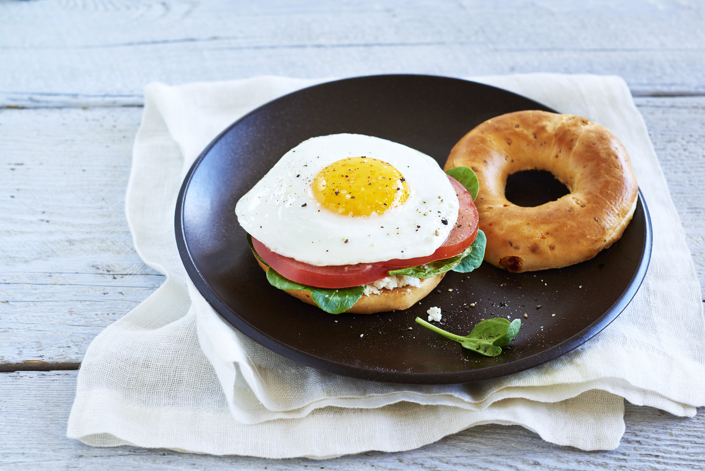

Breakfast Bagel

Description
This is basiaclly my every morning breakfast. Fast, easy, delicious!
This is a very basic recipe. Only requires a few basic ingredients that most people should have on hand.
You can make this in two ways:
- Open faced
- Closed "sandwich style"
Ingredients
- 1 or 2 eggs.
- Slices or cheese (I like sharp cheddar).
- Butter or oil (for pan).
- Salt to taste.
- Pepper to taste.
- Toast bagel(s), add a bit of oil to pan and start cooking eggs on medium low heat.
- Cut cheese, butter bagel once done toasting.
- Finish egg to desired yokiness.
- Assemble bage, cheese on bagel, egg on top of cheese. Enjoy!